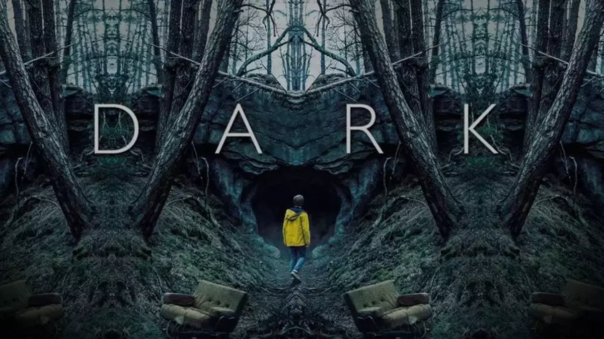

ANA SAYFA
| DİZİ ADI | YAYINLANMA TARİHİ | SEZON SAYISI | IMBD PUANI |
| Dark | 2017- 2020 | 3 | 8.7 |
| Stranger Things | 2016- | 4+ | 8.7 |
| The Boys | 2019 - | 4+ | 8.7 |
| Sense8 | 2015 - 2018 | 2 | 8.2 |
| The 100 | 2014 - 2020 | 7 | 7.4 |

"Dark", bilim kurgu, gerilim ve dram unsurlarını ustalıkla harmanlayan ve izleyiciyi derin düşüncelere sevk eden bir televizyon başyapıtıdır. Almanya'nın küçük bir kasabasında geçen dizi, dört ailenin geçmişi, bugünü ve geleceği arasındaki karmaşık ilişkileri keşfeder. Zaman yolculuğu ve paralel evrenler gibi derin temaları işlerken, insan doğasının karanlık yanlarını ve evrimsel değişimle birlikte var olan ahlaki belirsizlikleri irdeler. Kayıp çocukların ardındaki gizem, kasaba halkını birbirine bağlayan sırlar ve zamanın döngüsel yapısı, diziyi sürükleyici ve düşündürücü kılar. "Dark", yalnızca bir dizi değil, aynı zamanda zaman, kader ve bilinç üzerine bir felsefi keşif sunar. Gerilim dolu atmosferi, zekice kurgusu ve derin karakter gelişimleriyle izleyiciyi içine çeker. Ve bu yüzden öneri listemizin zirvesinde yer alır.